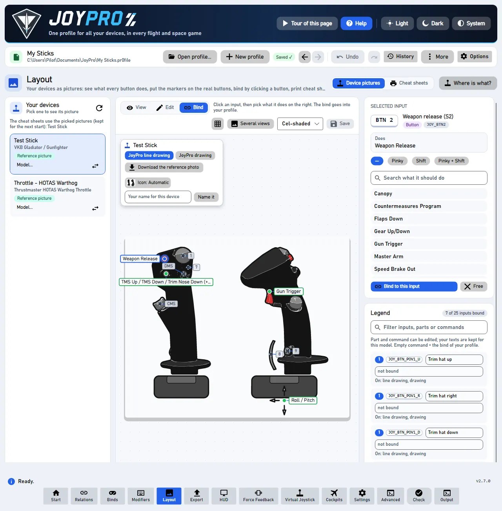

#Tá a stíl féin ag an bhfeiste seo
TicbhoscascríofaTugann sé stíl dá cuid féin don fheiste a thaispeántar: dathanna, cló agus marcóirí a bileoige tagartha.
Stóráiltear í le bileog na feiste agus taistealaíonn sí le Roinn leagan amach....
Taispeánann an leathanach Leagan amach pictiúr de gach ceann de do chuid feistí agus cad a dhéanann gach cnaipe, hata agus ais. Tá dhá chuid ann, a athraítear ag an mbarr: Pictiúir feistí (feiste amháin ag an am: féach, ceartaigh na marcóirí, ceangail ar an bpictiúr) agus Bileoga tagartha (pictiúir inphriontáilte de do chuid feistí go léir, in aghaidh an aerárthaigh). Ní athraíonn aon rud ar an leathanach seo cluiche, ach amháin ceangal a dhéanann tú sa mhód Ceangail, a théann isteach i do phróifíl cosúil le haon cheangal eile.


Osclaíonn Cad atá cá háit? fuinneog le do chuid feistí go léir. In aice le gach rialú, deir sé cad a dhéanann an rialú i do chluiche. Tá sé le fáil ag barr ar dheis an leathanaigh seo, ar an leathanach Tús agus i roghchlár an tráidire.
Athraíonn Lean an cluiche go dtí an cluiche a imríonn tú agus, in DCS, go dtí an t-aerárthach a eitlíonn tú. Tuilleadh: Cad atá cá háit? Féach cad a dhéanann gach cnaipe.


Is féidir le JoyPro leathanach le do cheangail a chur ar kneeboard gach aerárthaigh DCS. Léann tú é sa chábán píolóta féin.
Ar athraigh tú cnaipe? Brúigh Cuir ar an kneeboard arís: cuireann JoyPro a leathanaigh féin in ionad na seancheann. Fanann do leathanaigh kneeboard eile. Tuilleadh: Féach ar mo cheangail ar kneeboard DCS.




Pictiúir de do chuid feistí le gach ceangal scríofa in aice leis na cnaipí, le priontáil nó le coinneáil ar dhara scáileán. Ticeáil na feistí, na cluichí agus na haerárthaigh, roghnaigh Forbhreathnú in aghaidh na feiste agus/nó Ceann in aghaidh an aerárthaigh, brúigh Cruthaigh bileoga tagartha. Téann na pictiúir (PNG) isteach san fhillteán aschuir; taispeánann an réamhamharc iad.


Taispeánann bileog tagartha cad a dhéanann na cnaipí in aerárthach amháin, le hainmneacha an chluiche sin féin ar na horduithe nuair a roghnaíonn tú é sa bhosca réamhamhairc. Scríobhtar ceangal a rinneadh sa mhód Ceangail isteach sa chluiche ag an gcéad easpórtáil eile, cosúil le ceangal a taifeadadh ar an leathanach Ceangail.
Tá cnaipe in aghaidh gach pictiúir den fheiste sa stiall pictiúr os cionn an chanbháis. Roghnaíonn an bosca le hais an chnaipe 3D stíl na líníochta: Línte nó dathanna leacha faoi imlínte troma (dathanna i Socruithe > Líníochtaí). Faigheann feistí a bhfuil samhail 3D acu Amharc 3D: tarraing chun casadh, zúmálann an roth, athshocraíonn cliceáil dhúbailte. Is í an líníocht leacht a phriontálann na bileoga tagartha agus a n-oibríonn mód Eagarthóireachta uirthi.
Aithníonn JoyPro feiste de réir a haitheantais USB, a hainm agus na n-ionchur a thuairiscíonn sí, i gcomparáid le catalóg de roinnt céadta samhail. Nuair nach féidir leis a rá (bonn le greimeanna inmhalartaithe, aitheantas USB amháin do roinnt táirgí, feiste anaithnid), fiafraíonn sé os cionn an phictiúir: Cé acu atá ann? le tíleanna de na hiarrthóirí, Is dóichúla ar dtús, Coinnigh an ceann is dóichúla, Gan liostú: cuardaigh an chatalóg, Ní anois. D'fheiste anaithnid roghnaíonn tú a cineál freisin. Fiafraíonn Samhail... > Roghnaigh samhail eile... arís am ar bith.
Nuair nach eol don phictiúr a thaispeántar suíomh ar bith de chuid ("Gan suímh ar an bpictiúr seo fós"), cuireann cúntóir na marcóirí ina n-áit iad i gceann nóiméid:
Gan an fheiste in aice láimhe, ainmníonn Anois cuir ina áit: X an chéad ionchur eile; cuireann cliceáil ansin é, iarrann Níos déanaí é i ndiaidh na cinn eile, agus is lipéid iad na hionchuir gan áit is féidir leat a tharraingt ar an bpictiúr. Tugann Cealaigh an suíomh deireanach ar ais; téann Scipeáil go dtí an chéad ionchur eile; cuireann Stop ar sos é. Coinníonn Tuilleadh Ais, Stop, Cuir rialú leis (rialú nach eol do JoyPro: cnaipe, lasc, hata, mion-mhaide, ionchódóir, ais) agus Bain den phictiúr.


Tarraingíonn Tuilleadh > Spotaí aimsithe (turgnamhach) fáinní tanaí briste ar spotaí grianghraif a bhfuil cuma cnaipí, hataí nó lasc orthu. Cuireann cliceáil (nó lipéad a ligtear anuas) gar d'fháinne an marcóir i lár an fháinne. Ní eol do JoyPro cén t-ionchur atá i spota, mar sin ní chuireann sé aon rud ina áit leis féin; oibríonn sé ar ghrianghraif, ní ar líníochtaí JoyPro, agus ritheann sé as líne.
Ar phictiúr le suímh aitheanta, tarraingíonn Táblaí (barra uirlisí) cuma bhileog tagartha JoyPro 1: tábla in aghaidh grúpa rialuithe timpeall an phictiúir, línte chuig na codanna, an gaol ceangailte in aghaidh sraithe agus ceangal an mhionathraitheora i dara colún. Roghnaíonn an bosca réamhamhairc an rud a thaispeánann na sraitheanna: Ainmneacha gaolta, nó cluiche agus aerárthach amháin le teidil roghchláir an chluiche sin féin. I mód Eagarthóireachta tarraingíonn tú tábla (bioráiltear é), a imeall deas, mír líne nó spota; tá Colún mionathraitheora, Sraith + / Sraith −, Bioráilte, Athbhealaigh líne, Bain líne, Scoilt ina dtáblaí aonair, Grúpáil arís, Eagraigh go huathoibríoch agus Athshocraigh sa phainéal taoibh. Ceanglaíonn gaol a tharraingítear ó Tarraing gaol ar shraith agus a ligtear anuas ar shraith é ansin.


Cuireann Roinnt amharc níos mó pictiúr d'fheiste amháin ar leathanach (tosach agus taobh, ionas go mbíonn gach cnaipe clúdaithe): Cuir amharc leis, D'íomhá féin..., Socraigh, Cuir an t-amharc seo in eagar, Bain an t-amharc, Bain an leathanach, Ar ais chuig pictiúr amháin. Is é A4 nó Letter formáid an leathanaigh le priontáil, 16:9 / 21:9 / 32:9 do scáileán. Priontálann na bileoga tagartha an leathanach.
Nuair atá ionchur ar iarraidh nó ar an spota mícheart, deisigh é i mód Eagarthóireachta (tarraing, Cuir rialú leis, Bain den phictiúr, athainmnigh san eochair). Coinnítear gach rud ar an ríomhaire seo mar do shraith féin os cionn shonraí JoyPro. Sábhálann Seol ceartúchán chuig JoyPro... an t-athrú mar chomhad beag agus osclaíonn sé foirm saincheiste réamhlíonta ar GitHub; socraíonn tú ansin an seolfaidh tú é. Baineann Samhail... > Athshocraigh go réamhshocrú JoyPro... d'athruithe go léir ar fheiste (fiafraíonn sé ar dtús; cuireann Cealaigh an t-athshocrú ar ais iad).
Móid V / E / B, N cuir marcóir (comhad leagain amach), Del bain, Ctrl+Z / Ctrl+Y cealaigh agus athdhéan, Ctrl+S sábháil, + / - zúmáil, 0 nó F oiriúnaigh, bogann saigheada beagán i mód Eagarthóireachta (Shift: 10 px), tarraingíonn Alt gan léim, éiríonn comhad pictiúir a ligtear anuas ina ghrianghraf agat den fheiste.
flowchart TD D["Feiste<br/>(aitheantas USB, ainm, ionchuir)"] --> I["DeviceIdentifier<br/>+ catalóg feistí"] I --> R["Tagairt feiste:<br/>samhail, codanna, pictiúir"] R --> C["DeviceMarkerCanvas<br/>(Amharc / Eagar / Ceangal)"] P["Ceangail na próifíle<br/>(binds list)"] --> C C --> B["binds set"] R --> S["Bileog lipéad:<br/>táblaí agus línte"] S --> L["layout render:<br/>PNG in aghaidh feiste<br/>agus aerárthaigh"] S --> K["layout kneeboard:<br/>DCS Kneeboard nó<br/>OpenKneeboard"]
MainWindowViewModel.LayoutWorkspace.cs (móid, cealú, ceangal agus saoradh), LayoutReference.cs (an pictiúr tagartha, sábháil, óstach an chúntóra), LayoutCallouts.cs (táblaí agus línte), MultiView.cs, CheatSheets.cs, ReferencePhotos.cs, Device3D.cs, DeviceIcons.cs, ModelChoice.cs, LayoutReset.cs, UnmappedPress.cs; DeviceReferenceViewModel*.cs, MarkerAssistantViewModel.cs, SheetStyleViewModel.cs. An canbhás: Views/Controls/DeviceMarkerCanvas.cs, CalloutSheetCanvas.cs, MultiViewCanvas.cs.<data>\DeviceReference): grips.json (freagraí faoin tsamhail), Layouts\ (do shuímh in aghaidh pictiúir), Callouts\ (táblaí agus línte), MultiView\, ReferencePhotos\<model>\ (seiceáilte le SHA-256), Corrections\, ResetBackups\; do shainmhínithe feistí in <data>\Devices. An stíl bhileoige dhomhanda in sheet-style.json.engine layout suggest (aimsigh pictiúr do gach feiste, leagan amach ar phictiúr a roghnaigh tú), engine layout render (na bileoga tagartha), engine layout image (an comhad leagain amach a úsáideann próifíl), engine layout template-inspect / engine layout template-save (eagarthóir an chomhaid leagain amach), engine layout callouts, engine layout multiview, engine layout titles (teidil roghchláir na gcluichí), engine hud devices (samhlacha na bhfeistí ceangailte), engine devices reference (aithint, spotaí aimsithe), engine binds list.An doiciméadú gné taobh thiar den leathanach seo, ginte ón stór:
152 rialú, léite ó fhoinse an chláir: 152 scríofa, 0 leis na fíricí ón bhfoinse (leid uirlise, nóta tráchta sa chód, glao innill), 0 fós le leathnú.
Tugann sé stíl dá cuid féin don fheiste a thaispeántar: dathanna, cló agus marcóirí a bileoige tagartha.
Stóráiltear í le bileog na feiste agus taistealaíonn sí le Roinn leagan amach....
Leid uirlise Glacann sé gach dath, an cló agus líníocht an réamhshocraithe
Tugann sé gach dath, an cló agus líníocht an réamhshocraithe a roghnaíodh thuas do stíl na bileoige.
Úsáideann an t-eagarthóir agus na bileoga tagartha é láithreach; sábháiltear é ar an toirt.
Leid uirlise Scrios an réamhshocrú seo de do chuid
Scriosann sé an réamhshocrú roghnaithe de do chuid féin. Ní athraíonn an stíl atá in úsáid.
Leid uirlise Coinníonn sé an stíl seo faoin ainm, le go bhféadfaí í a chur i bhfeidhm arís níos déanaí
Coinníonn sé stíl reatha na bileoige mar réamhshocrú faoin ainm a chlóscríobhtar thuas, chun í a chur i bhfeidhm arís níos déanaí.
Diúltaítear d'ainm de réamhshocruithe JoyPro; cuirtear an ceann nua in ionad do réamhshocraithe leis an ainm céanna.
Leid uirlise Cuir mionathraitheoir agus a dhath leis
Cuireann sé sraith le haghaidh datha mionathraitheora leis. Clóscríobh an mionathraitheoir mar a ainmníonn do cheangail é: faigheann a mharcóirí agus an barra os cionn a cholúin an dath sin.
Baineann sé an dath mionathraitheora seo de stíl na bileoige; faigheann marcóirí ceangal leis an mionathraitheoir sin dath a gcineáil arís.
Leid uirlise Brúigh cnaipe, bog ais nó hata: lasann a líne suas agus taispeántar a fheidhm ag an mbarr. Ní léann sé do chuid feistí ach fad atá an fhuinneog seo oscailte.
Fuinneog an leagain amach, air de réir réamhshocraithe: brúigh cnaipe, bog ais nó hata POV agus lasann a shraith; ainmnítear a fheidhm i litreacha móra ag an mbarr.
Ní léann JoyPro d'fheistí ach fad atá an fhuinneog oscailte agus gan íoslaghdú, agus tar éis tamaillín gan ionchur ach gach 250 ms.
Leid uirlise Athraíonn sé go dtí an cluiche atá á imirt agat agus, in DCS, go dtí an t-aerárthach atá á eitilt agat (teastaíonn duán DCS JoyPro). Gan é, fanann do rogha.
Fuinneog an leagain amach: athraíonn sé go dtí an cluiche a imríonn tú agus, in DCS, go dtí an t-aerárthach a eitlíonn tú.
Gan é sin fanann do rogha.
Leid uirlise Léann sé na ceangail arís (tar éis duit rud a athrú)
Fuinneog an leagain amach: léann sé na ceangail arís, mar shampla tar éis duit rud éigin a athrú ar leathanach na gCeangal.
Dúnann sé fuinneog an leagain amach. Cuimhníonn JoyPro cá raibh sí agus cad a thaispeáin sí; osclaíonn sí ansin an chéad uair eile.
Má fhágtar oscailte í nuair a dhúntar JoyPro, tagann sí ar ais leis an gcéad tosú eile.
Leid uirlise Gach feiste leis an méid a dhéanann gach rialtán i gcluiche agus aerárthach amháin, ina fhuinneog féin (do dhara monatóir freisin); lasann an rud a bhrúnn tú
Osclaíonn Cad atá cá háit? fuinneog an leagain amach: fuinneog dá cuid féin le gach feiste agus an fheidhm ar gach rialtán do chluiche agus aerárthach amháin.
Lasann an rud a bhrúnn tú.
Leid uirlise Pictiúr feiste amháin: cad a dhéanann a ionchuir, cuir na marcóirí in eagar, ceangail ar an bpictiúr
Taispeánann sé an chuid Pictiúir feistí: feiste amháin ag an am le cad a dhéanann a hionchuir, áit a gcuireann tú na marcóirí in eagar agus a gceanglaíonn tú ar an bpictiúr.
Leid uirlise Pictiúir inphriontáilte de do fheistí leis an méid a dhéanann gach cnaipe (ní athraíonn aon chluiche)
Taispeánann sé an chuid Bileoga tagartha: pictiúir inphriontáilte d'fheistí le cad a dhéanann gach cnaipe.
Ní athraíonn a ndéanamh aon chluiche.
Leid uirlise Aimsigh pictiúir do fheistí arís
Aimsigh mo fheistí: lorgaíonn sé pictiúr de gach feiste cheangailte agus liostaíonn sé iad ar chlé.
Leid uirlise Cén tsamhail í an fheiste seo (roghnaigh ceann eile, abair nach í d'fheiste í, cealaigh an rogha dheireanach) agus Athshocraigh go réamhshocrú JoyPro
Osclaíonn sé roghchlár samhla na feiste: Roghnaigh samhail eile..., Ní hí seo m'fheiste, Cealaigh an rogha samhla dheireanach, Athshocraigh go réamhshocrú JoyPro... agus, tar éis athshocraithe, a chealú.
Fiafraíonn sé "Cé acu atá ann?" arís don fheiste seo, lena hiarrthóirí, agus cuardach catalóige cliceáil amháin uait.
Úsáid é nuair a thaispeánann JoyPro an tsamhail mhícheart.
Deir sé go bhfuil an tsamhail a thaispeántar mícheart: caitear leis an bhfeiste mar fheiste anaithnid agus coinnítear í mar a cineál go dtí go roghnaíonn tú a samhail sa cheist os cionn an phictiúir.
Tugann sé ar ais freagra níos luaithe na samhla don fheiste seo.
Leid uirlise Imíonn gach rud a d'athraigh tú i bpictiúr na feiste seo: suímh marcóirí, táblaí agus línte, páirteanna athainmnithe, do ghrianghraf, do shainmhíniú agus an comhad leagan amach a úsáideann an phróifíl. Fiafraíonn sé ar dtús; cuireann Cealaigh an t-athshocrú ar ais é.
Baineann sé gach rud a d'athraigh tú ar phictiúr na feiste seo: suímh marcóirí, táblaí agus línte, codanna athainmnithe, do ghrianghraf, do shainmhíniú féin, agus an comhad leagain amach a úsáideann an phróifíl.
Fiafraíonn sé ar dtús; cuireann Undo the reset gach rud ar ais.
"Cealaigh athshocrú <device>": cuireann sé ar ais gach rud a bhain Athshocraigh go réamhshocrú JoyPro... ar shiúl.
Osclaíonn sé Ionadaigh feiste leis an bhfeiste seo mar an seancheann: bogann a ceangail go feiste eile ionchur ar ionchur, le réamhamharc ar dtús.
Teastaíonn próifíl oscailte; is athrú amháin sa Stair é an cur i bhfeidhm.
Leid uirlise Do leagan amach JoyPro 1 (comhaid .layout le do phictiúir): cóipeálann JoyPro iad agus taispeánann sé iad do na feistí ar ar dhéanadh iad. Ní léitear an seanfhillteán ach.
Roghnaíonn sé d'fhillteán JoyPro 1: cóipeálann JoyPro na comhaid .layout le do phictiúir agus taispeánann sé iad do na feistí ar a ndearnadh iad.
Ní léitear an seanfhillteán ach amháin.
Leid uirlise Osclaíonn cuardach íomhánna do dhíoltóir agus samhail na feiste roghnaithe
Osclaíonn sé cuardach íomhánna do dhéantóir agus samhail na feiste roghnaithe i do bhrabhsálaí.
Sábháil pictiúr maith, cuir isteach sa bhosca thíos é agus brúigh Úsáid pictiúr.
Roghnaíonn sé comhad pictiúr den fheiste do Úsáid pictiúr.
Tógann sé leagan amach ar an bpictiúr a roghnaigh tú: cuireann an t-inneall fíorchnaipí agus fíoraiseanna na feiste air mar mharcóirí agus, le próifíl oscailte, stórálann sé é mar leagan amach na feiste do na bileoga tagartha.
Leid uirlise Osclaíonn sé an fillteán in Explorer (cruthaíonn JoyPro é más gá)
Osclaíonn sé an fillteán do bhileoga tagartha pobail a fuair tú.
Tairgtear comhaid phictiúr a chuireann tú ann mar leaganacha amach 2D dá bhfeistí i stiall na bpictiúr.
Lorgaíonn Mol pictiúir de na feistí ceangailte.
Coinnithe don chéad tosú eile.
Lorgaíonn Mol freisin pictiúir de na feistí a bhfuil ceangail ag do phróifíl dóibh, ceangailte nó nach ea.
Coinnithe don chéad tosú eile.
Stórálann Mol an pictiúr a roghnaíonn sé do gach feiste sa phróifíl.
Coinnithe don chéad tosú eile.
Leid uirlise Úsáid na pictiúir roghnaithe do na bileoga tagartha
Úsáideann sé comhaid leagain amach na moltaí roghnaithe do na bileoga tagartha agus ticeálann sé na feistí sin ansin.
Coinnítear na roghanna don chéad tosú eile, go dtí go n-athshocraítear pictiúr na feiste nó go gcuireann leagan amach eile ina n-ionad.
Osclaíonn sé comhad leagain amach an mholta roghnaithe in eagarthóir chomhad an leagain amach: lódálann sé an comhad agus taispeánann sé ar an gcanbhás é.
Lódálann sé an comhad in Comhad leagan amach arís isteach in eagarthóir chomhad an leagain amach.
Leid uirlise Féach: cad a dhéanann gach ionchur (V)
Athraíonn sé mód an phictiúir: taispeánann Amharc cad a dhéanann gach ionchur, bogann Cuir in eagar marcóirí agus osclaíonn sé na huirlisí eagarthóireachta, ceanglaíonn Ceangail gaol le hionchur a gcliceáiltear air.
Cuir marcóir: cuireann an chéad chliceáil eile ar an bpictiúr marcóir nua ann, leis an ionchur, an cineál agus na mionathraitheoirí atá socraithe sa phainéal ar dheis.
Cealaíonn sé an bogadh nó an t-athrú marcóra deireanach ar an bpictiúr; ainmníonn an leid uirlise é.
Déanann sé an t-athrú marcóra cealaithe arís.
Greamaíonn marcóirí tarraingthe do na marcóirí eile.
Coinnigh Alt síos agus tú ag tarraingt chun ceann a chur in áit go saor.
Taispeánann sé greille 10 px ar an bpictiúr agus greamaíonn sé marcóirí tarraingthe di.
Coinnithe don chéad tosú eile.
Taispeánann sé táblaí eochrach agus línte nasctha chomhad an leagain amach ar an bpictiúr, mar a tharraingíonn na bileoga tagartha iad; cuir in eagar iad faoi Táblaí, línte agus stíl lipéid ar dheis.
Coinnithe don chéad tosú eile.
Leid uirlise Eagraigh go huathoibríoch: na táblaí agus línte arís; fanann táblaí bioráilte (bogtha agat) san áit ina bhfuil siad
Socraíonn sé na táblaí agus na línte arís; fanann táblaí pionnáilte mar a bhfuil siad.
Cealaíonn Ctrl+Z é.
Air: táblaí timpeall an phictiúir le línte go dtí na codanna, cosúil le bileoga tagartha JoyPro 1.
As: lipéid ag na marcóirí.
Roinnt amharc: osclaíonn sé leathanach na feiste le roinnt pictiúr, nó tosaíonn sé ceann leis an bpictiúr a thaispeántar.
Ní mór marcóirí a bheith curtha ar an bpictiúr ar dtús.
Leid uirlise Cas an fheiste timpeall (tarraing; zúmálann an roth; athshocraíonn cliceáil dhúbailte): rindreáil JoyPro de shamhail 3D den fheiste. As: an líníocht chothrom, arb í a phriontálann na bileoga tagartha agus a n-oibríonn an mód Cuir in eagar uirthi.
Taispeánann sé amharc 3D JoyPro den fheiste: tarraing chun í a chasadh, zúmálann an roth, athshocraíonn cliceáil dhúbailte.
As: an líníocht chothrom, arb é an rud a phriontálann na bileoga tagartha agus a n-oibríonn mód Cuir in eagar air.
Sábhálann sé an pictiúr a thaispeántar: suímh na marcóirí, táblaí agus línte; do chomhad leagain amach scríobhann sé an comhad.
Coinníonn an uathshábháil iad freisin; glanann Sábháil cealú na n-athruithe.
Íoslódálann sé gach grianghraf tagartha atá ar eolas ag JoyPro do na feistí ceangailte seo, sa chúlra le barra dul chun cinn; seiceáiltear gach ceann i gcoinne thaifead JoyPro.
Áirítear é mar do "tá" do na feistí seo.
Ní anois: ní íoslódáiltear aon ghrianghraif; fiafraíonn JoyPro arís sa chéad seisiún eile.
Leid uirlise Íoslódáil sa chúlra grianghraif thagartha gach gléis a thagann chun solais (Socruithe > Príobháideacht)
Íoslódálann sé na grianghraif thagartha tairgthe anois agus casann sé Íoslódáil grianghraif thagartha go huathoibríoch air: íoslódáiltear grianghraif gach feiste a fheictear sa chúlra as sin amach.
Leid uirlise Ná híoslódáil grianghraif de na gléasanna seo; fanann líníochtaí JoyPro
Deir sé "níl" le grianghraif na bhfeistí seo: ní íoslódáiltear aon rud agus fanann Líníochtaí JoyPro.
Is féidir le Socruithe > Príobháideacht fiafraí arís.
Leid uirlise Pictiúr eile den fheiste ar an leathanach: líníochtaí agus grianghraif JoyPro di, nó d'íomhá féin
Liostaíonn sé pictiúir eile na feiste nach bhfuil ar an leathanach fós; cuirtear an ceann a roghnaíonn tú leis lena mharcóirí, a tháblaí agus a línte.
Ní féidir pictiúr gan marcóirí curtha in áit a chur leis.
Leid uirlise Íomhá de do chuid féin mar amharc (grianghraf den taobh, lipéad; níl marcóirí aici)
Cuireann sé íomhá de do chuid féin leis an leathanach mar amharc.
Cóipeáiltear isteach i bhfillteán JoyPro í agus níl aon mharcóirí aici.
Leid uirlise Na hamhairc taobh le taobh, chomh mór agus a ligeann an leathanach
Cuireann sé na hamhairc taobh le taobh, chomh mór agus a cheadaíonn an leathanach; sábháiltear an leathanach láithreach.
Leid uirlise A mharcóirí, a tháblaí agus a línte san eagarthóir gnáth (taispeánann an leathanach iad ina dhiaidh)
Osclaíonn sé pictiúr an amhairc roghnaithe sa ghnáth-eagarthóir chun a mharcóirí, a tháblaí agus a línte a athrú; taispeánann an leathanach na hathruithe ina dhiaidh sin.
Ní d'íomhánna de do chuid féin.
Baineann sé an t-amharc roghnaithe den leathanach.
Leid uirlise Taispeánann an fheiste a pictiúr amháin arís
Baineann sé an leathanach le roinnt amharc. Taispeánann an fheiste a pictiúr amháin arís; fanann marcóirí, táblaí agus línte na n-amharc lena bpictiúir.
Leid uirlise Fanann an leathanach (priontálann na bileoga tagartha é); taispeánann sé seo an pictiúr amháin arís
Taispeánann sé an pictiúr amháin arís. Fanann an leathanach le roinnt amharc sábháilte agus priontálann na bileoga tagartha é fós.
Taispeánann sé an pictiúr seo den fheiste: do leagan amach, do ghrianghraf, grianghraf déantóra, Líníocht JoyPro nó leagan amach 2D.
Má roghnaítear pictiúr tagartha in ionad leagain amach 2D, tugtar a leagan amach roimhe sin ar ais don fheiste.
Leid uirlise Íoslódáil grianghraf táirge an déantóra ar a ndearnadh an líníocht seo (stóráilte ar an ríomhaire seo amháin, ní sheoltar riamh é)
Íoslódálann sé grianghraf táirge an déantóra as ar rinneadh an líníocht seo, coinnithe ar an ríomhaire seo amháin.
Gan do "tá" don tsamhail seo fiafraíonn sé ar dtús agus íoslódálann sé tar éis Tá.
Freagraíonn sé an cheist faoi ghrianghraf an déantóra: íoslódálann agus taispeánann Tá é don tsamhail seo, coinníonn Níl Líníocht JoyPro, ceadaíonn I gcónaí do mo fheistí go léir grianghraif gach feiste, stopann Choíche iad go léir.
Athraíonn Socruithe > Príobháideacht ar ais é.
Leid uirlise Oscail an fillteán leis an ngrianghraf sábháilte
Osclaíonn sé Explorer leis an ngrianghraf tagartha íoslódáilte roghnaithe.
Leid uirlise Íocón na feiste ar chártaí na bhfeistí, sa liosta ceangal agus ar an HUD: roghnaigh ceann dá pictiúir nó pictiúr de do chuid féin
Osclaíonn sé roghnóir na ndeilbhíní: tíl amháin in aghaidh gach pictiúir den fheiste, Uathoibríoch, agus Do phictiúr féin....
Taispeántar an deilbhín ar chártaí na bhfeistí, i liosta na gceangal agus ar an HUD.
Leid uirlise Coinnigh an t-ainm sa phróifíl
Coinníonn sé an t-ainm a clóscríobhadh sa bhosca mar d'ainm don fheiste seo.
Taispeánann JoyPro é i ngach áit in ionad ainm na feiste; faigheann na cluichí an fhíorfheiste i gcónaí.
Baineann sé d'ainm don fheiste seo: taispeántar fíorainm na feiste arís i ngach áit.
Dúnann sé roghnóir na ndeilbhíní; fanann an deilbhín mar atá sé.
Déanann sé deilbhín na feiste den phictiúr seo; ligeann Uathoibríoch do JoyPro roghnú arís.
Leid uirlise Éiríonn comhad pictiúir de do chuid féin an t-íocón (gearrtha amach ó chúlra simplí agus bearrtha cearnach)
Déanann sé deilbhín na feiste de chomhad pictiúr de do chuid féin: gearrtha as cúlra simplí agus bearrtha cearnógach.
Leid uirlise Iarr an t-ionchur seo i ndiaidh na cinn eile
Níos déanaí: iarrann cúntóir na marcóirí an t-ionchur seo i ndiaidh na cinn eile.
Leid uirlise Brúigh cnaipe nó treo hata ar an bhfeiste ansin
Fanann cúntóir na marcóirí leis an gcéad bhrú eile: brúigh cnaipe nó treo hata POV ar an bhfeiste a thaispeántar, ansin cliceáil ar a láthair ar an bpictiúr.
Tar éis 30 soicind gan brú stopann sé agus insíonn sé é sin.
Scipeálann sé an t-ionchur a iarrann cúntóir na marcóirí anois agus téann sé go dtí an chéad cheann eile.
Leid uirlise Tóg an socrú deireanach ar ais
Cealaíonn sé an cur in áit deireanach a rinne cúntóir na marcóirí: téann an chuid go dtí an áit ina raibh sí roimhe, nó ar ais i measc na slisíní nuair nach raibh áit aici.
Déanann Ctrl+Z ar an leathanach an rud céanna.
Leid uirlise Sábháil na marcóirí (agus do shainmhíniú feiste)
Stopann sé cúntóir na marcóirí agus sábhálann sé suímh na marcóirí den phictiúr a thaispeántar.
Nuair a bhí an fheiste anaithnid nó nuair a fuair sí ionchuir nua, sábháiltear í freisin mar shainmhíniú feiste de do chuid féin.
Dúnann sé cúntóir na marcóirí thar an bpictiúr.
Fanann suímh atá déanta cheana mar athruithe neamhshábháilte; coinníonn Sábháil iad.
Leid uirlise Ais, Stop, cuir rialú leis nach bhfuil ar eolas ag JoyPro, bain páirt den phictiúr
Taispeánann sé uirlisí annamha cúntóir na marcóirí: Ais, Stop, Spotaí aimsithe, Cuir rialú leis agus Bain den phictiúr.
Leid uirlise Bog ais den fheiste ansin
Fanann cúntóir na marcóirí le hais: bog ais amháin den fheiste go hiomlán, ansin cliceáil ar a láthair ar an bpictiúr.
Cuireann sé cúntóir na marcóirí ar sos: stopann sé ag fanacht le brú.
Leanann Tosaigh ar aghaidh, sábhálann Críochnaigh an méid a cuireadh in áit.
Leid uirlise Fáinní ar na spotaí sa ghrianghraf a bhfuil cuma cnaipí, hataí nó lasc orthu; cuireann cliceáil gar d'fháinne an marcóir ina lár. Níl a fhios ag JoyPro cén t-ionchur atá i spota.
Tarraingíonn sé fáinní briste ar láithreacha grianghraif atá cosúil le cnaipí, hataí POV nó lasca; cuireann cliceáil gar d'fháinne an marcóir ar a lár.
Níl a fhios ag JoyPro cén t-ionchur atá ag láthair, mar sin ní chuireann sé aon rud in áit leis féin.
Leid uirlise Brúigh (nó bog) gach ionchur den rialú ar d'fheiste, ansin cliceáil a áit ar an bpictiúr
Cuireann sé rialtán nach bhfuil ar eolas ag JoyPro leis, den chineál a roghnaíodh sa bhosca: brúigh nó bog gach ceann dá ionchuir mar a iarrtar, ansin cliceáil ar a láthair ar an bpictiúr.
Sábhálann Críochnaigh é mar shainmhíniú feiste de do chuid féin.
Leid uirlise Bain an pháirt roghnaithe den phictiúr (chuir JoyPro san áit mhícheart í)
Baineann sé an chuid roghnaithe den phictiúr: ní thaispeántar ann í a thuilleadh.
Cuir in áit arís í le Tosaigh nó le cliceáil tar éis í a roghnú; tugann Cealaigh ar ais í.
Íoslódálann sé amhairc 3D na bhfeistí ceangailte seo ó eisiúintí JoyPro; feictear Amharc 3D ansin ar an Leathanach Leagan Amach agus i bpictiúr leathanach na gCeangal.
Ní anois: ní íoslódáiltear na hamhairc 3D; tagann an tairiscint ar ais i seisiún níos déanaí.
Leid uirlise Íoslódáil na hamhairc 3D agus na pictiúir cábáin ó eisiúintí JoyPro gan fiafraí (Socruithe > Príobháideacht)
Íoslódálann sé na hamhairc 3D tairgthe anois agus socraíonn sé Pictiúir ó eisiúintí JoyPro go "i gcónaí": íoslódáiltear amhairc 3D agus pacáistí pictiúr leathanach na gCabán gan fiafraí as sin amach.
Leid uirlise Ná cuardaigh amhairc 3D ná pictiúir cábáin in eisiúintí JoyPro (Socruithe > Príobháideacht); fanann an líníocht chothrom
Socraíonn sé Pictiúir ó eisiúintí JoyPro go "choíche": stopann JoyPro ag lorg amharc 3D agus pacáistí pictiúr cábáin; fanann an líníocht chothrom.
Tosaíonn sé cúntóir na marcóirí do na hionchuir nach bhfuil áit acu ar an bpictiúr fós: brúigh gach ceann ar an bhfeiste, ansin cliceáil ar a láthair.
Leid uirlise Sábhálann sé do shuímh agus do rialuithe mar chomhad beag agus osclaíonn sé foirm saincheiste réamhlíonta ar leathanach GitHub JoyPro; socraíonn tú ansin an seolfaidh tú í
Sábhálann sé do shuímh agus do rialtáin mar chomhad beag agus osclaíonn sé foirm saincheiste réamhlíonta ar leathanach GitHub JoyPro i do bhrabhsálaí; socraíonn tusa ansin an seolfaidh tú é.
Ní sheolann JoyPro féin aon rud.
Leid uirlise Brúigh gach cnaipe den fheiste agus cliceáil cá bhfuil sé ar an bpictiúr; d'fheistí anaithnide ainmníonn sé na codanna freisin
Osclaíonn sé cúntóir na marcóirí thar an bpictiúr: brúigh gach cnaipe den fheiste agus cliceáil san áit a bhfuil sé.
D'fheistí anaithnide ainmníonn sé na codanna freisin.
Leid uirlise Leagan amach a roinn duine éigin (joypro-device-layout .json)
Iompórtálann sé suímh marcóirí a roinn duine éigin: coinnítear iad dá samhail agus dá ngrianghraf, leis na táblaí agus na línte, grianghraf taobh istigh den chomhad agus leathanach le roinnt amharc nuair atá siad sa chomhad.
Roghnaíonn sé an tsamhail seo mar an fheiste. Taispeánann an pictiúr í láithreach agus cuimhníonn JoyPro ar an bhfreagra.
D'fheiste nach bhfuil ar eolas ag JoyPro: insíonn sé cén cineál feiste í.
Marcálann "Dóchúil" tomhas JoyPro.
Leid uirlise Tóg an chéad cheann agus ná fiafraigh arís
Glacann sé an chéad tíl mar shamhail na feiste agus ní fhiafraíonn sé arís.
Osclaíonn sé cuardach ar chatalóg iomlán na bhfeistí nuair nach bhfuil an tsamhail cheart i measc na dtíleanna; roghnaigh í ó na torthaí.
Dúnann sé an cheist gan freagra; tagann sí ar ais nuair a thaispeántar an fheiste arís.
Leid uirlise Marcóir nua i lár an phictiúir (nó cas air 'Cuir marcóir' agus cliceáil an láthair)
Cuireann sé marcóir i lár phictiúr chomhad an leagain amach leis an ionchur, an cineál agus na mionathraitheoirí atá socraithe thíos.
Cealaíonn Ctrl+Z é.
Insíonn sé gurb é an t-ionchur ceangailte seo brú an hata POV.
Sábháiltear é mar do shainmhíniú ar an bhfeiste, agus taispeánann an eochair agus na táblaí an brú as sin amach.
Stopann sé mapáil brú hata POV: stopann JoyPro ag fanacht leis an mbrú agus fanann an tsraith "gan mhapáil".
Slis mionathraitheora de mharcóir chomhad an leagain amach: ticeáilte, taispeánann an marcóir an ceangal agus an mionathraitheoir seo coinnithe síos.
Leid uirlise Tabhair an t-ionchur, an cineál agus an mionathraitheoir seo don mharcóir roghnaithe
Tugann sé an t-ionchur, an cineál agus na mionathraitheoirí atá socraithe thuas do mharcóir roghnaithe chomhad an leagain amach.
Diúltaítear d'ionchur atá ag marcóir eile cheana.
Leid uirlise Bain an marcóir (Del)
Baineann sé an marcóir roghnaithe de chomhad an leagain amach.
Tugann Ctrl+Z ar ais é; scríobhann Sábháil an comhad.
Roghnaíonn sé an meascán mionathraitheoirí a gheobhaidh an chéad cheangal eile.
Ceanglaíonn Ceangail leis an ionchur seo leis, agus taispeánann an liosta cad a oireann.
Ceanglaíonn sé an gaol a roghnaíodh sa liosta leis an ionchur roghnaithe, leis an meascán mionathraitheoirí a roghnaíodh.
Saortar gaol níos luaithe an ionchuir ar dtús; glacann cnaipí gaolta cnaipe, aiseanna gaolta aise.
Leid uirlise Bain an ceangal den ionchur seo
Baineann sé an ceangal den ionchur roghnaithe: coinníonn an gaol a shocruithe eile ach cailleann sé an t-ionchur seo.
Téann an t-athrú isteach i do phróifíl agus ina Stair.
Leid uirlise An dara colún téacs leis an gceangal mionathraitheora (shift)
Taispeánann nó folaíonn sé an dara colún den tábla roghnaithe leis an gceangal mionathraitheora.
Cealaíonn Ctrl+Z é.
Leid uirlise Faigheann ais sraith crios (0-20 %, 20-40 % ...); taispeánann táblaí eile sraith fholaithe arís
Faigheann tábla aise sraith crios amháin eile; taispeánann táblaí eile sraith a bhí folaithe roimhe.
Leid uirlise Baineann sraith crios dheireanach aise, nó folaíonn an tsraith dheireanach
Baineann sé an tsraith crios dheireanach de thábla aise, nó folaíonn sé an tsraith dheireanach de thábla eile.
Leid uirlise Fanann tábla bioráilte san áit ina bhfuil sé nuair a eagraítear na táblaí arís
Pionnálann sé an tábla roghnaithe: fanann tábla pionnáilte mar a bhfuil sé nuair a shocraítear na táblaí arís.
Pionnálann bogadh tábla é.
Leid uirlise Líne nua ón láthair go dtí an tábla (tugann líne bainte ar ais freisin)
Tarraingíonn sé líne úr ó láthair an tábla roghnaithe go dtí an tábla, gan do lúba; tugann sé líne a baineadh ar ais freisin.
Leid uirlise Baineann líne an tábla (Del)
Baineann sé an líne roghnaithe, nó líne an tábla roghnaithe.
Tarraing ó hanla cruinn an tábla go láthair chun ceann a chur leis, nó úsáid Athbhealaigh líne.
Leid uirlise Éiríonn eangach eochracha (nó an tábla codanna ar aon láthair amháin) ina thábla amháin in aghaidh gach cuid, gach ceann lena líne féin
Déanann sé tábla amháin in aghaidh na coda den ghreille eochracha roghnaithe, gach ceann lena líne féin.
Cealaíonn Grúpáil arís é.
Leid uirlise Roinneann eochracha agus codanna ar aon láthair amháin a dtáblaí arís (cealaíonn gach Scoilt)
Roinneann eochracha agus codanna ar láthair amháin a dtáblaí arís: cealaíonn sé gach Scoilt ina dtáblaí aonair.
Leid uirlise Eagrú JoyPro arís: bioráin, leithid, sraitheanna agus línte lúbtha freisin (tugann Cealaigh do cheannsa ar ais)
Cuireann sé socrú JoyPro de na táblaí agus na línte ar ais, pionnaí, leithid, sraitheanna agus línte lúbtha freisin; fanann rogha na meascán mionathraitheoirí agus stíl na bileoige.
Tugann Ctrl+Z do cheann féin ar ais.
Leid uirlise Úsáid do ghrianghraf féin den fheiste (nó scaoil comhad pictiúir ar an bpictiúr)
Roghnaíonn sé grianghraf de do chuid féin den fheiste seo: cóipeálann JoyPro isteach ina fhillteán féin é agus taispeánann sé é.
Cuir a mharcóirí in áit le cúntóir na marcóirí.
Baineann sé do ghrianghraf féin den tsamhail seo; filleann an pictiúr ar ghrianghraf an déantóra nó ar Líníocht JoyPro.
Fanann suímh do mharcóirí ar phictiúir eile.
Leid uirlise Baineann sé do shuímh marcóirí ar an bpictiúr seo: tagann suímh JoyPro féin ar ais (bíonn grianghraf nach bhfuil suímh ag JoyPro dó gan marcóirí ansin)
Baineann sé suímh do mharcóirí ar an bpictiúr a thaispeántar: taispeántar suímh JoyPro féin arís san áit a bhfuil siad aige, murach sin imíonn na marcóirí go dtí go gcuirtear in áit arís iad.
Tugann Ctrl+Z do cheann féin ar ais go dtí go sábhálann tú.
Leid uirlise Íoslódáil grianghraf táirge an déantóra den fheiste seo óna shuíomh gréasáin agus taispeáin é (stóráilte ar an ríomhaire seo amháin, ní sheoltar riamh é). As: líníocht JoyPro. Socruithe > Príobháideacht: fiafraigh, i gcónaí nó choíche do gach feiste.
Do fhreagra do ghrianghraf déantóra na samhla seo: ticeáilte, íoslódálann JoyPro grianghraf táirge an déantóra ó shuíomh an déantóra agus taispeánann sé é; gan tic, taispeántar Líníocht JoyPro.
Socraíonn Socruithe > Príobháideacht fiafraigh, i gcónaí nó choíche do gach feiste.
Leid uirlise Coinnigh an fheiste seo (ainmneacha, ionchuir nua, marcóirí ar an líníocht) mar do shainmhíniú feiste
Coinníonn sé an fheiste a thaispeántar mar shainmhíniú feiste de do chuid féin: na hainmneacha a thug tú ar na codanna, ionchuir a chuir tú leis agus na marcóirí ar Líníocht JoyPro.
Úsáideann JoyPro é don fheiste seo as sin amach.
Leid uirlise Sábháil an fheiste seo mar chomhad sainmhínithe (JSON) le roinnt
Sábhálann sé an fheiste a thaispeántar mar chomhad sainmhínithe le roinnt nó le seoladh chuig JoyPro: a codanna le d'ainmneacha, ionchuir nua agus suímh na marcóirí ar an líníocht.
Leid uirlise Cuir comhad sainmhínithe feiste (JSON) leis
Cuireann sé feistí chomhad sainmhínithe le do shainmhínithe feiste agus taispeánann sé an chéad cheann.
Diúltaítear do chomhad nach sainmhíniú é le teachtaireacht.
Leid uirlise Sábháil suímh marcóirí an phictiúir atá ar taispeáint le roinnt (téann grianghraf an déantóra lena sheoladh amháin; téann do ghrianghraf féin isteach)
Sábhálann sé suímh mharcóirí an phictiúir a thaispeántar mar chomhad le roinnt, lena tháblaí agus a línte agus an leathanach le roinnt amharc.
Téann grianghraf an déantóra de réir a sheolta amháin; téann do ghrianghraf féin isteach sa chomhad.
Faigheann tábla nua nó roghnaithe chomhad an leagain amach scáth ar an mbileog tagartha.
Cuireann sé tábla eochrach le comhad an leagain amach leis an ainm, an cineál, an méid agus an dath cúlra thuas.
Taispeántar é ar an bpictiúr le Táblaí agus línte air, áit ar féidir leat é a tharraingt.
Tugann sé na luachanna thuas don tábla roghnaithe.
Baineann sé an tábla roghnaithe de chomhad an leagain amach.
Air: cuireann an chéad chliceáil eile ar an bpictiúr an tábla ann.
Air: socraíonn an chéad chliceáil eile ar an bpictiúr tús líne nasctha.
Air: cuireann gach cliceáil ar an bpictiúr cúinne leis an líne, ionas gur féidir léi dul timpeall codanna eile.
Déanann sé dearmad ar phointe tosaigh roghnaithe na líne nasctha nua.
Cuireann sé líne nasctha leis ón tús roghnaithe go lipéad an ionchuir roghnaithe, leis an ainm, an dath, an leithead, an bealach agus na pointí cúinne thuas.
Tugann sé na luachanna thuas don líne nasctha roghnaithe.
Baineann sé an líne nasctha roghnaithe de chomhad an leagain amach.
Ticeálann sé gach feiste do na bileoga tagartha.
Díthiceálann sé gach feiste; mura bhfuil aon cheann ticeáilte, faigheann gach feiste le pictiúr bileog.
Déanann sé bileog fhorbhreathnaithe in aghaidh na feiste leis na gaolta atá ceangailte uirthi.
Déanann sé bileog amháin in aghaidh na feiste agus an aerárthaigh, le ceangail an aerárthaigh sin.
Fágann sé amach feistí gan pictiúr, cinn ticeáilte freisin, agus déanann sé bileoga na cinn eile.
As: stopann feiste ticeáilte gan pictiúr an easpórtáil le nóta.
Leid uirlise Leathanach in aghaidh an aerárthaigh freisin (agus don fhorbhreathnú) le bileoga tagartha na bhfeistí go léir faoina chéile: All devices.png
Déanann sé leathanach freisin in aghaidh an aerárthaigh le bileoga gach feiste faoina chéile: All devices.png.
Ticeálann sé gach cluiche den phróifíl do na bileoga in aghaidh an aerárthaigh.
Díthiceálann sé gach cluiche.
Ticeálann sé gach aerárthach de na cluichí ticeáilte.
Díthiceálann sé gach aerárthach; mura bhfuil aon cheann ticeáilte, faigheann gach aerárthach de na cluichí bileog.
Tarraingíonn sé na marcóirí ar bhileoga na gcomhad leagain amach.
Cuireann sé tábla eochrach le bileoga na gcomhad leagain amach, leis an méid agus na sraitheanna atá socraithe thíos.
Roghnaíonn sé an fillteán ina scríobhtar na bileoga tagartha.
Osclaíonn sé fillteán aschuir na mbileog tagartha in Explorer.
Cuireann sé na leathanaigh ar kneeboard DCS: fillteán Kneeboard d'fhillteán DCS Saved Games agus fillteán DCS.openbeta in aice leis, san fhillteán a úsáideann DCS do gach aerárthach.
Scríobhann sé na leathanaigh isteach i bhfillteán a roghnaíonn tú ina ionad, fofhillteán amháin in aghaidh an chluiche agus an aerárthaigh, i gcruth na bileoige féin.
Dírigh cluaisín Folder OpenKneeboard air, nó aon uirlis kneeboard eile nó cluiche a thaispeánann fillteán pictiúr.
Roghnaíonn sé an fillteán do leathanaigh an kneeboard.
Leid uirlise As: na haerárthaí ticeáilte thuas amháin.
Air: faigheann gach aerárthach a bhfuil ceangail ag d'fheistí ann a leathanaigh.
As: ach na haerárthaigh atá ticeáilte thuas do na bileoga tagartha amháin.
Liostaíonn leathanaigh aerárthaigh gach feiste, gach feiste ina cuid, in ionad leathanach in aghaidh na feiste.
Coinnítear deireadh an ainm agus airde an leathanaigh leis na roghanna eile.
Leid uirlise As: pictiúr na bileoige tagartha, mar atá ar an leathanach Leagan Amach.
Air: ní liostaíonn gach leathanach ach na rialtáin a dhéanann rud éigin san aerárthach seo, i dtéacs mór, grúpáilte de réir rialtáin, le clib daite ar cheangail a dteastaíonn mionathraitheoir uathu.
Leanann feiste le go leor ceangal ar aghaidh chuig an dara leathanach.
Taispeánann sé pictiúr na feiste ag barr leathanach an liosta, le huimhir ar gach rialtán a mheaitseálann an liosta.
As: gan pictiúr, níos mó spáis don liosta.
Cuireann Cuir ar an kneeboard bileog tagartha gach aerárthaigh ar a kneeboard: leathanach amháin in aghaidh an aerárthaigh agus na feiste, tarraingthe mar na bileoga tagartha leis na feistí ticeáilte agus stíl na bileoige.
In DCS gheobhaidh tú na leathanaigh ar kneeboard an aerárthaigh sin sa chábán.
Taispeánann sé na pictiúir is nuaí d'fhillteán an aschuir sa réamhamharc, cinn ó sheisiúin níos luaithe freisin.
Leid uirlise Cruthaíonn na pictiúir (PNG) sa fhillteán aschuir. Ní dhéantar aon rud leis na cluichí.
Déanann sé na bileoga tagartha i bhfillteán an aschuir leis na feistí, na cluichí, na haerárthaigh ticeáilte agus stíl na bileoige, agus taispeánann sé sa réamhamharc iad.
Sábháiltear athruithe neamhshábháilte ar chomhad an leagain amach ar dtús; stopann feiste ticeáilte gan pictiúr é le teachtaireacht.
Osclaíonn sé an bhileog tagartha seo i d'amharcóir pictiúr, chun féachaint uirthi i lánmhéid nó í a phriontáil.